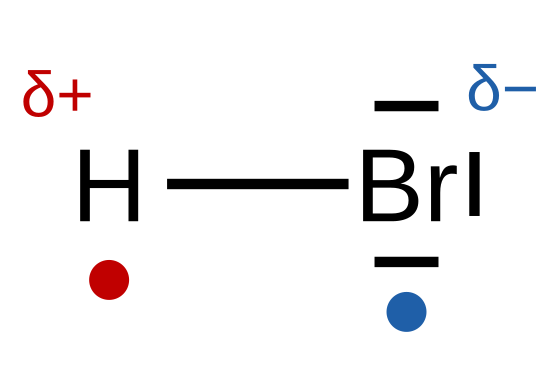
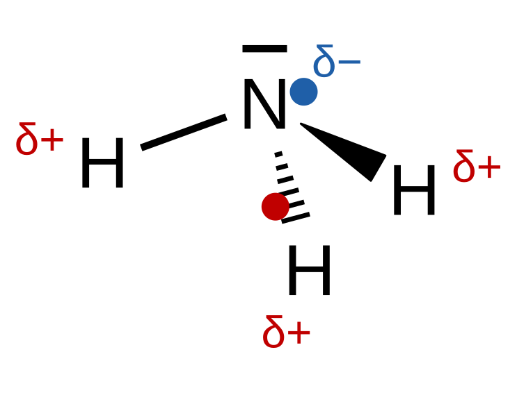
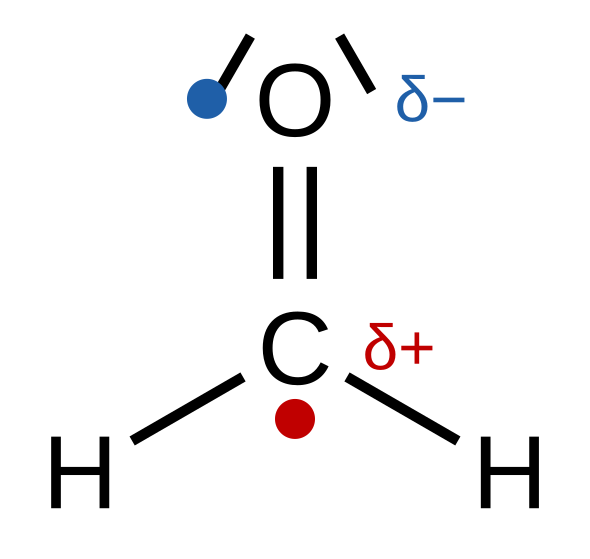
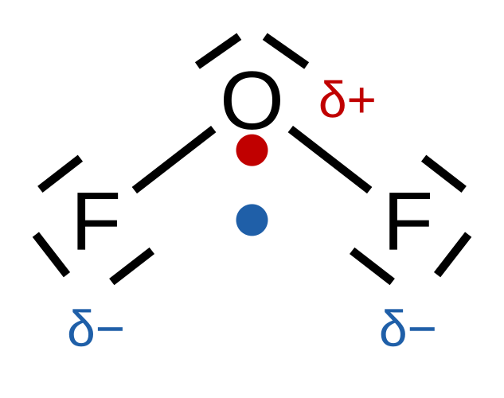
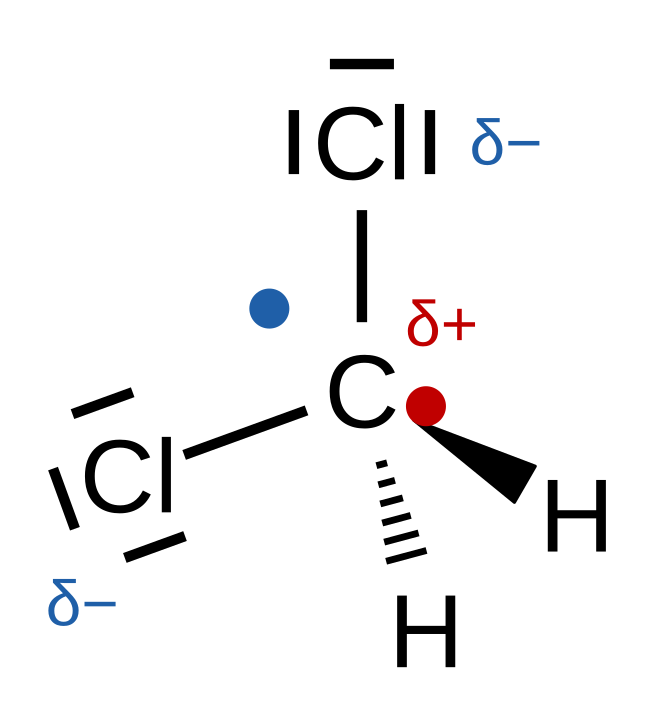

So nutzen Sie die Hilfen: Versuchen Sie es erst allein. Öffnen Sie dann Hilfe 1, danach Hilfe 2. Die Lösung dient zur Kontrolle – vergleichen Sie sie mit Ihrer eigenen Antwort und verbessern Sie diese.
Aufgabe 1: Prüfschema ordnen
Bringen Sie die Schritte in die richtige Reihenfolge!
Hilfe 1
Ohne polare Bindungen gibt es gar keine Partialladungen – womit beginnen Sie also?
Hilfe 2
Die Schwerpunkte können Sie erst bestimmen, wenn Sie wissen, wo die Atome im Raum liegen und welche Partialladungen sie tragen.
Lösung (erst nach eigenem Versuch öffnen!)
B → D → E → A → C
Aufgabe 2: Dipol oder kein Dipol?
Zeichnen Sie die Raumformeln und entscheiden Sie! Wählen Sie das Molekül, bei dem Sie Hilfe brauchen.
Das Prüfschema
1. Polare Bindungen? (ΔEN) 2. Raumformel nach dem EPA-Modell. 3. δ+ und δ− eintragen. 4. Ladungsschwerpunkte ermitteln. 5. Fallen sie zusammen → kein Dipol; getrennt → Dipol.
a) HBr
Hilfe 1
Zweiatomig – nur eine polare Bindung (ΔEN 0,8). δ+ am H, δ− am Br: Die Schwerpunkte liegen an verschiedenen Atomen.
Lösung

b) NH₃
Hilfe 1
N: drei bindende, ein freies Elektronenpaar → trigonal-pyramidal. δ− am N, die drei δ+ an den H-Atomen liegen alle „unten“ – der positive Schwerpunkt liegt unter dem N-Atom.
Lösung

c) CO₂
Hilfe 1
Zwei Doppelbindungen, kein freies Paar am C → linear (180°). Die beiden δ− liegen genau gegenüber – wo liegt ihr Schwerpunkt?
Lösung

d) CH₂O
Hilfe 1
Trigonal-planar. Die C=O-Bindung ist polar (δ+ C, δ− O), die C–H-Bindungen praktisch unpolar. Der negative Schwerpunkt liegt am O-Atom.
Lösung

e) ★ OF₂
Hilfe 1
Wie Wasser gewinkelt (zwei freie Paare am O). Achtung: F ist elektronegativer als O → O ist δ+, beide F δ−.
Lösung

f) ★ CH₂Cl₂
Hilfe 1
Tetraedrisch – aber zwei Ecken sind mit Cl (δ−), zwei mit H besetzt. Liegt der negative Schwerpunkt noch genau am C-Atom?
Lösung

Aufgabe 3: Den Versuch erklären
Erklären Sie die Beobachtungen auf Teilchenebene!
Hilfe 1
Welches der beiden Moleküle ist ein Dipolmolekül? Schauen Sie in Abb. 3.
Hilfe 2
Ein Dipolmolekül dreht sich im elektrischen Feld: Welcher Pol zeigt zum negativ geladenen Stab? Warum wird das Molekül dann angezogen?
Lösung (erst nach eigenem Versuch öffnen!)
Wasser-Moleküle sind Dipole: Sie richten sich mit dem δ+-Pol zum negativen Stab aus und werden angezogen → Ablenkung. CCl₄-Moleküle sind symmetrisch (Schwerpunkte fallen zusammen), keine Dipole → keine Ablenkung.
Aufgabe 4 (★ Wahl): Ist CO₂ ein Dipol?
Beurteilen Sie die Aussage!
Hilfe 1
Lesen Sie den Merkkasten: Welche zwei Bedingungen müssen erfüllt sein? Welche davon erfüllt CO₂ nicht?
Lösung (erst nach eigenem Versuch öffnen!)
Falsch: Die C=O-Bindungen sind polar, aber das Molekül ist linear – die Ladungsschwerpunkte fallen am C-Atom zusammen. CO₂ ist kein Dipolmolekül.
📱 Weiter üben: App „BioChemie FOS BOS Würzburg“ → Molekulare Stoffe → Elektronegativität und Polarität